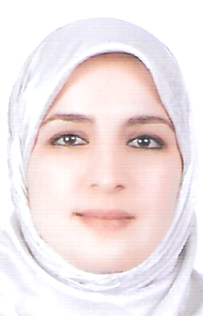

About
My name is Souad, a Full Stack Software Developer from Morocco. I graduated with a bachelor's degree in Distributed Computer Systems from the Faculty of Science and Technologies in Marrakech.
After completing my studies, I welcomed my third baby 👶, and I decided to prioritize my little one over my career for the next 3 to 4 years. Being available for my children during their early years was crucial, especially when remote work was not as common. Last year, as my child grew a bit older, I decided to re-enter the tech industry. I began by refreshing my coding knowledge, exploring the most in-demand technologies. React and Python stood out as the best choices. I dedicated 3 to 4 months to learning from various platforms, building projects to practice.
Feeling confident in my skills, I started applying for jobs locally. Despite successfully navigating technical interviews, I encountered challenges during behavioral interviews. Recruiters focused more on my availability than my qualifications or productivity. Determined to find opportunities that valued my skills, I delved into remote work, eventually applying to Microverse, an online international school teaching software development through remote pair programming. I was accepted 🎉 and embarked on a full-time, 10-month program to hone my technical skills and soft skills crucial for remote team success.
In February 2022, I applied to Outreachy and was delighted to be accepted as an Outreachy intern with the unstructured.studio Team. Through this blog, I share my Outreachy experience, documenting my journey to becoming a remote Full Stack Software Developer. I'll provide valuable tips, insights into technologies, and share my thoughts along the way. Feel free to connect with me through my social links.
About me

Souad El Mansouri
Outreachy'22 intern @unstructured studio Full-stack software developer with a love for Python and React